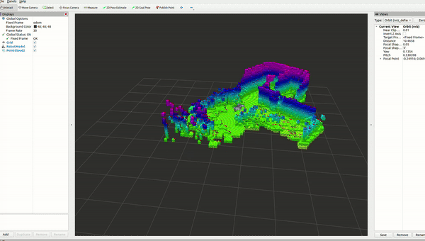
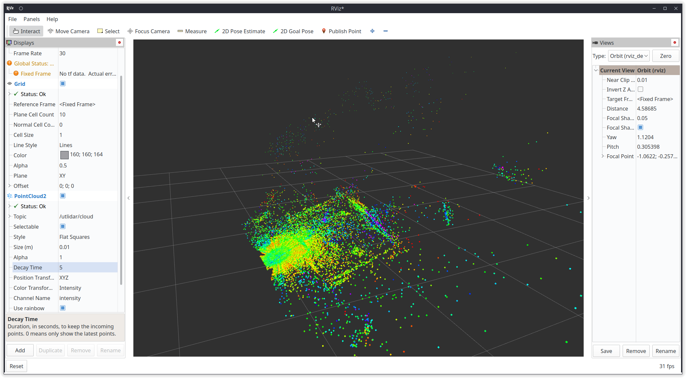

3D 激光建图
启动 Go2 的 3D 激光与建图节点，遥控遍历场地，实时拼出 3D 点云与栅格地图（Mid-360 / XT16 等多线激光）。验收标准：生成可供 EXP-03 使用的巡检地图（map.yaml / .pgm + 序列化地图）；关键技巧：闭合回路提升建图质量。
00课程节奏：五星学习法 · 8 段微课（每段 ≤ 15 min）
本实验按五星学习法组织：先用一个真实故障聚焦问题，再激活旧知（坐标系 + 激光测距 + 累积误差），接着示证新知（三级流水线 + 回环动画），然后动手应用新知完成一键启动到绕场存图，最后借排障与拓展融会贯通。全程切成 8 段微课、每段不超过 15 分钟，段间停顿 1~2 分钟消化；纯讲授合计约 100 分钟，其余课时用于动手实操与个别辅导。
| 课段 | 五星阶段 | 时长 | 对应章节 | 本段任务 |
|---|---|---|---|---|
| 课段 1 | 聚焦问题 | 12 min | §01 + §02 前半 | 抛出现场故障"建图回来墙重影"，明确本课要解决的目标 |
| 课段 2 | 激活旧知 | 8 min | §02 后半 | 用坐标系/TF、激光测距、累积误差三条旧知解释故障成因 |
| 课段 3 | 示证新知 | 15 min | §03 | 认识 3D 激光雷达/机载算力/DDS 链路与建图场地要求 |
| 课段 4 | 示证新知 | 12 min | §06 | 看懂点云逐帧累积与回环校正动画 |
| 课段 5 | 应用新知 | 15 min | §04 S1~S3 + §05 ①② | 粒子检查 + 一键启动 robot.launch.py（边讲边演） |
| 课段 6 | 应用新知 | 15 min | §04 S4~S5 + §05 ③④⑤ | 遥控绕场闭合回路 + Save/Serialize 存图——课段 1 的故障就此根除 |
| 课段 7 | 应用新知 | 10 min | §07 | 建图质量沙盘自测，全通方可进入下一实验 |
| 课段 8 | 融会贯通 | 13 min | §08~§10 | 排障口诀收口，挑战题与思考题拔高迁移 |
讲课提示：课段 1/2 以讲授 + 提问为主；课段 3~6 边讲边演（实物 / 动画 / 命令行）；课段 7 学员独立完成；课段 8 答疑拔高。段与段之间停顿 1~2 分钟，确认学员跟上再进下一段。
01学习目标课段 1 · 聚焦问题 · 12 min
- 用自己的话讲清 SLAM：机器人一边「看」一边「画地图」，同时记住自己走到哪。
- 说清 3D 点云到 2D 栅格地图的降维链路：utlidar/cloud → pointcloud_to_laserscan → slam_toolbox。
- 用 go2_ros2_sdk 一键拉起雷达、建图、RViz，并用键盘/遥控探索整个场地。
- 掌握 Start At Dock → 遥控探索 → Save Map → Serialize Map 建图工作流。
- 理解「回环」为什么能纠正累积漂移，掌握绕场一周闭合回路的实操技巧。
02原理：3D 点云建图（SLAM）讲透课段 1 收尾 + 课段 2 · 激活旧知 · 8 min
把建图想象成「蒙眼画房间」：你被蒙着眼在房间里走，手里的一根激光笔每毫秒向四周量一次距离——右手边 2.3 米有面墙、正前方 4.1 米是柜子……把这些「距离点」按你的走位反投影到空间里，点越攒越多，房间的轮廓就浮现了。这就是 3D 点云建图。难点有两个：一是你不知道自己走到哪（得边走边定位，即 SLAM = Simultaneous Localization And Mapping，同步定位与建图）；二是每一步的定位误差会累加，走一圈回来发现「起点和终点对不上」——这就是漂移。
Go2 上的三级流水线
回环：让地图「拉链对齿」的唯一办法
scan 匹配每一步都有一点点误差，走 100 米可能错出半米——地图里的墙会「重影」。但若你绕场一圈回到起点，建图算法会认出「这面墙我见过！」（回环检测），把首尾强行对齐并把误差摊销到整条轨迹上，墙立刻变直。这就是培训方案强调的技巧：闭合回路提升建图质量。

03硬件与材料课段 3 · 示证新知 · 15 min
| 项 | 规格 / 要求 | 说明 |
|---|---|---|
| 3D 激光雷达 | 多线激光（Mid-360 / XT16 级别） | 建图主传感器，话题 utlidar/cloud，先 echo --no-arr 查 frame_id |
| 机载/实训机 | Jetson Orin 40 TOPS + Ubuntu 22.04 / ROS2 Humble | go2_ros2_sdk 在 ROS2 Humble 下编译运行 |
| DDS 链路 | 网卡 192.168.123.x + rmw_cyclonedds_cpp | 沿用 EXP-01 配网成果 |
| 遥控手段 | teleop_twist_keyboard / 遥控器 / joy | 探索走位用，低速慢走防止点云拉花 |
| 建图场地 | 3×5m 以上、特征丰富（墙、柱、货架） | 空旷无特征的走廊最难匹配，多留参照物 |

04操作步骤课段 5~6 · 应用新知 · 2×15 min
点云频率 + frame_id 正常
robot.launch.py 拉起雷达/建图/RViz
SlamToolboxPlugin 设定建图原点
沿墙绕圈闭合回路 → 补盲区
Save Map + Serialize Map 双产物
- 粒子检查：
ros2 topic echo --no-arr /utlidar/cloud确认 frame_id=utlidar_lidar，ros2 topic hz /utlidar/cloud看频率稳定。 - 一键启动：设置 ROBOT_IP 与 CONN_TYPE 后
ros2 launch go2_robot_sdk robot.launch.py——该 launch 内置 pointcloud_to_laserscan、slam_toolbox online_async、Nav2、RViz、Foxglove 全套。 - 切到建图视角：RViz 左侧 SlamToolbox（SlamToolboxPlugin）面板，点击 Start At Dock 开始建图，把起始位姿定在充电桩（Dock）处——与 EXP-04 的回充闭环呼应。
- 遥控探索：键盘或遥控器低速起步，先沿场地外围绕一整圈回到起点触发回环，再走中间区域补盲；途中观察点云是否与墙体贴合、有无重影。
- 保存地图：面板 Save Map 输出 map.yaml / map.pgm，再点 Serialize Map 序列化工匠文件——两种都交作业。
- 质量自检：重新加载地图，墙线笔直无重影、门口/柱子轮廓闭合、起终点一致即达标。

05关键命令随课段 5 / 6 对照使用
命令来自 go2_ros2_sdk 与 unitree_ros2 官方 README；IP 按实机替换。
# ① 预检：点云话题与坐标系（EXP-01 已通链路） ros2 topic hz /utlidar/cloud ros2 topic echo --no-arr /utlidar/cloud # frame_id 应为 utlidar_lidar # ② 一键启动（内置 pointcloud_to_laserscan + slam_toolbox + Nav2 + RViz + Foxglove） export ROBOT_IP=192.168.123.161 export CONN_TYPE=cyclonedds # 网线直连；webrtc 可走 WiFi ros2 launch go2_robot_sdk robot.launch.py # ③ 键盘遥控探索（若 launch 未带遥控，可另开终端） ros2 run teleop_twist_keyboard teleop_twist_keyboard # ④ RViz 操作（SlamToolboxPlugin 面板，鼠标点击，无命令行） # Start At Dock → 慢速绕场一圈闭合回路 → Save Map → Serialize Map # ⑤ 也可用 slam_toolbox 官方 CLI 存图（标准功能） ros2 run slam_toolbox save_map -f ~/maps/patrol_site
06动画：点云逐帧建图与回环课段 4 · 示证新知 · 12 min
07互动：建图质量沙盘课段 7 · 应用新知 · 10 min
把滑杆推到「高步数 + 不回环」，误差会冲破红线——这正是「闭合回路提升建图质量」的定量直觉：漂移 ≈ 单步误差 × 步数，只有回环能把这笔账一笔勾销。
08常见问题课段 8 · 融会贯通 · 13 min
09拓展阅读课段 8 · 融会贯通
- 宇树机载 unitree_slam / mid360_driver：官方建图服务，App 里点一点即可出图，效果好但闭源、不可随课分发——与本课 slam_toolbox 开源链路对照理解「能演示 ≠ 能二次开发」。
- FAST-LIO（HKU-Mars）：高性能 LIO 框架，工程界常用其替代方案——拓展阅读：https://github.com/hku-mars/FAST-LIO （命令与兼容性请自行核验后再用）。
- slam_toolbox 调参：loop_search_minimum_linear_distance（回环搜索距离）、ceres 线性求解器参数——地图重影时的第二把钥匙。
- 点云进阶玩法：go2_ros2_sdk 同时发布点云与 TF，配合 Foxglove 可回放建图全程，交作业时附回放比截图更有说服力。
- 3D→2D 的取舍：多层建筑需要分层建图；本课场景（单层厂区）以栅格为主，3D 点云留存作碰撞与货架核查的底档。